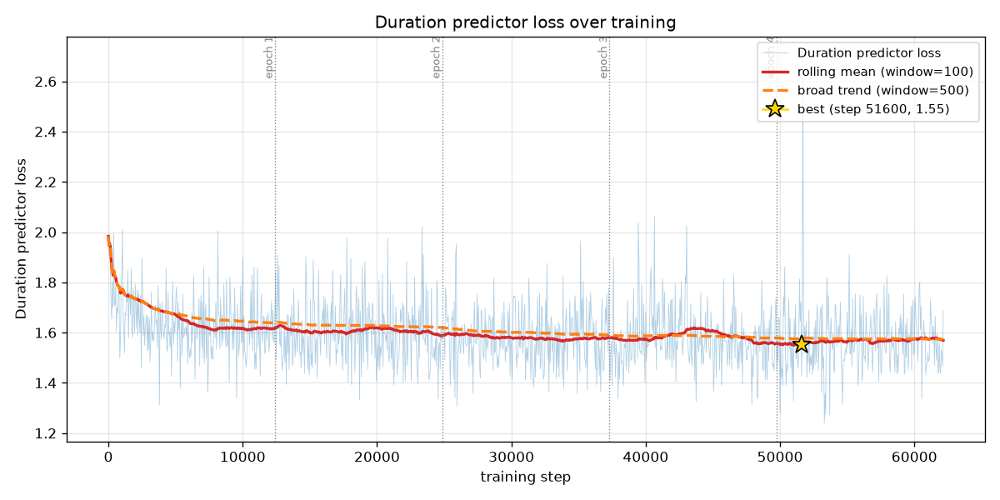
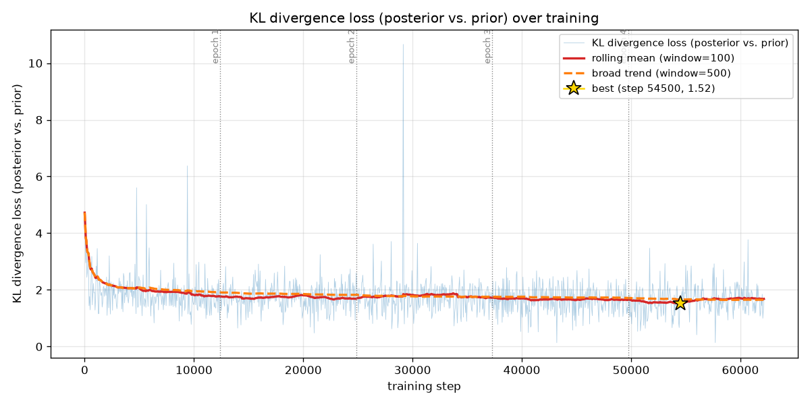
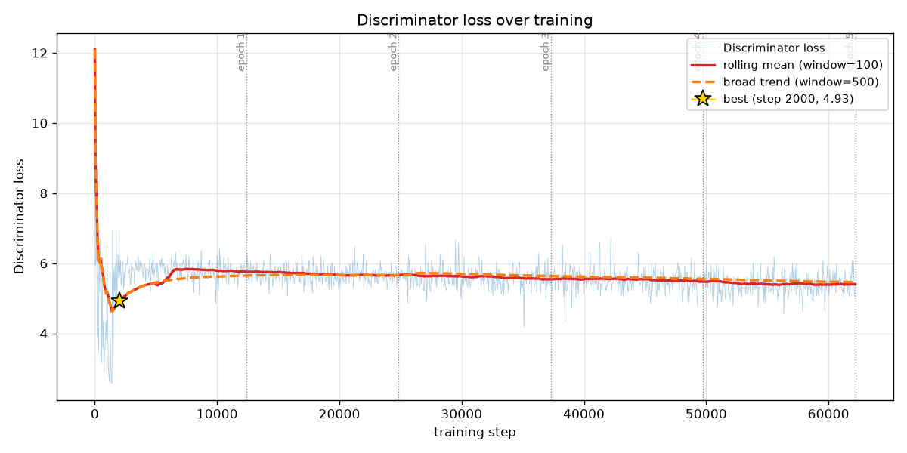
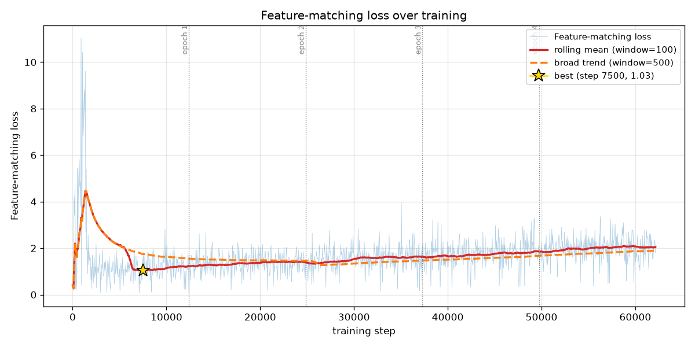

MPD reshapes 1-D audio to 2-D by prime periods(prime → no shared factors) → pitch & harmonics
MSD — 1-D convs at 3 scales → structure across time scales
Feature maps from both → feature-matching loss
NB: in training VITS has two inputs (text + real audio), but the audio only teaches the text-prior (KL). At inference there's no audio — it never transcribes, only text → speech.
8
How training works
Per batch: text→prior · real audio→latent z · flow · MAS aligns (adapted reference) · slice a segment → decoder → waveform → losses.
Then alternate two AdamW optimizers:
D step: real vs. detached fake → discriminator loss
I wrapped the alternation in decorators — read the method and it's linear; need the wiring, read the decorator. Logic in the function, complexity in the decorator.
9
Abstraction
solving the readability problem — or creating it :)
The GAN loop is messy: two optimizers, detach, zero-grad, backward, clip, AMP scaler, accumulation, checkpointing — all tangled around two tiny core steps.
I moved every bit of that wiring into decorators, leaving only the actual D-step / G-step logic in the methods.
Read the method → the algorithm is linear and clear. Need the plumbing → read the decorator.
This pattern is normal in ML — torch.nn.Module hides backward/autograd the same way. The complexity doesn't disappear; it's just put where it belongs.
10
Where we trained
First: Google Colab. Sessions dropped after ~20 min (no Pro+ background run), Drive filled with ~400 MB checkpoints, 12-hour limit, ephemeral VMs.
Then: local RTX 5060 (8 GB). No disconnects, full control.
Batch size & the 8 GB problem:
batch 4 didn't fit → AMP (fp16) (fp32 islands for STFT & MAS) + gradient accumulation for a large effective batch
num_workers=0 — Windows DataLoader crashed (error 1455) on long runs
10
Problems & fixes — nothing converged
Early runs: recon stuck ~0.45, duration loss 100–475, voice too fast. Three interacting bugs:
1
Duration ~100× too large — .mean() averaged only batch → per-token sum. Fix:.sum()/mask.sum() → dur 300→1.7
2
Grad clip 1.0 — oversized duration grad dominated the norm → scaled the whole generator → broke Adam. Fix: clip 1.0→1000, recon broke the plateau
3
Fresh discriminator corrupted the pretrained decoder. Fix: warm-up D for 500 steps + LR 2e-4→1e-4
→ real training: recon 0.85 → 0.40, correct speech rhythm.
11
Training setup & cost
Final successful run — all on the local RTX 5060:
Epoch
Duration
1
1.89 h
2
1.89 h
3
1.96 h
4
2.02 h
5
1.93 h
Total
≈ 9.68 GPU-hours
Plus ~3× more in failed runs and debugging.
And the RVC baking of the whole 13,100-clip dataset on top.
The 9.68 h is only the final clean pass — the real work was everything before it.
Sharp drop, then plateau ~0.42. Best at step 26,700 (0.404) — the core voice is learned early; after that the GAN slowly drifts up. This is why I don't take the last checkpoint.
14
Duration loss

After the normalization fix, dur sits at a healthy ~1.6 (best 1.55, was 100–475) — correct, stable speech rhythm.
15
KL divergence (posterior ‖ prior)

Settles around ~1.7 — the text-prior successfully learns to match the audio posterior. Alignment works.
16
Adversarial loss (generator side)
Oscillates around ~4 without collapsing — a healthy GAN equilibrium, generator and discriminator stay balanced.
17
Discriminator loss

Stable around ~5.5 — neither winning nor collapsing. The warm-up kept it from overpowering the pretrained decoder.
18
Feature-matching loss

Early spike during warm-up, then settles ~2 — matches discriminator features, stabilizes the GAN.
19
Generator loss (total)
Total G loss ~28, dominated by recon×45. Flat & stable — after the fixes, training is well-behaved end to end.